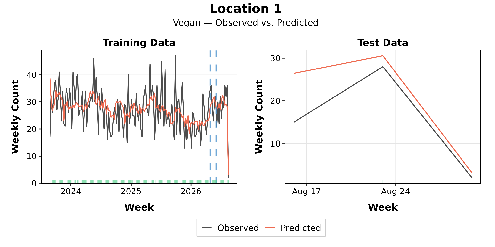

Location 1 · A1 · entrees · Vegan: observed and predicted

The fit's prediction figure: observed against predicted, weekly, training weeks left and held-out weeks right.

The fit's prediction figure: observed against predicted, weekly, training weeks left and held-out weeks right.